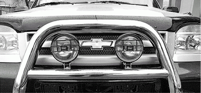

Туман
Совет № 96 Если ехать необходимо, а на улице густой туман, проверьте фары!
Проверьте работоспособной передней и задней оптики, особенно задние габаритные огни, лампы стоп-сигналов и указателей поворота (как передних, так и задних), лампы ближнего света и противотуманок. Желательно возить с собой запасные лампочки – никогда не знаешь, когда лампа перегорит.
Перед поездкой всю оптику нужно протереть, поскольку в туман чистоту оптики сохранить довольно трудно. Яркость фар (какие бы хорошие фары вы ни поставили) зависит от их чистоты. В дождь нужно частенько протирать фары. Если не хотите выглядеть совсем смешно (в непогоду иногда приходится останавливаться несколько раз, чтобы протереть фары) и постоянно возить с собой тряпочку и запас воды, установите омыватели фар. Они будут работать вместе с вашими дворниками – как только будут работать дворники, очищая ваше лобовое стекло, будут работать и омыватели фар. Тоже очень удобное устройство.
Совет № 97 В густом тумане нужно забыть о высоких скоростях. Следите за другими машинами!Не нужно думать, что если вы включили фары, то теперь вы в полной безопасности. Помните, что ваша машина так же трудно различима, как и все остальные автомобили.
Причем хуже всего в тумане различимы машины светлых цветов – белого, светло-серого и т. д.
Совет № 98 Из-за природы тумана расстояние до объектов в тумане кажется в два раза дальшеТо есть, когда вам кажется, что до машины 70-100 метров, на самом деле до нее осталось менее 50 метров (помните, что в среднем тормозной путь со скорости 80 км/ч до 10 км/ч занимает 30–40 метров). Поэтому в тумане нужно увеличить интервалы и по возможности забыть об обгонах.
Совет № 99 Не покупайте дешевые противотуманные фары на рынке. И помните: противотуманные фары дают нужный эффект, только если они правильно установлены и применяются вместе с ближним светомНеужели не хватает ближнего или дальнего света? Ближний свет через туман не пробьется, а дальний лучше вообще не включать, поскольку он будет отражаться от тумана и слепить водителя. Поэтому нужны противотуманные фары. Противотуманные фары должны быть установлены на расстоянии 0,25-0,7 метра над дорогой. Ниже опускать противотуманные фары не нужно, поскольку дальность их видимости увеличится не намного, а вот вероятность разбить их на неровной дороге повысится в несколько раз. Понятно, что противотуманные фары не должны преграждать свет основных фар, подфарников и указателей поворота.
Некоторые автолюбители встраивают противотуманные фары в решетку радиатора (рис. 9). Смотрятся они хорошо, но светят не очень. Во-первых, противотуманные фары (ПТФ) должны быть расположены ниже основных фар, так они будут дальше светить. Во-вторых, если прикрепить ПТФ к решетке радиатора, они будут мерцать, поскольку решетка радиатора крепится не жестко, вибрирует при движении автомобиля (особенно на наших «ровных» дорогах).

Рис. 9. Неправильно установленные противотуманные фары.
Лучше всего крепить ПТФ на бампере – фары не будут мерцать.
После установки ПТФ нужно правильно отрегулировать, это несложно, с этим справится любой автолюбитель. Нужно установить автомобиль на ровной площадке перед стенкой, которую будем использовать в качестве экрана. На стене проводят горизонтальную линию на таком расстоянии от земли, чтобы оно было равно расстоянию от земли до центра фар ненагруженного автомобиля. Затем в автомобиль нужно посадить двух человек и включить ПТФ. После этого нужно отрегулировать ПТФ так, чтобы верхняя граница «свет-тень» каждого луча проходила на 200 мм ниже ранее проведенной линии.
Совет № 100 Недостаточно просто купить хорошие фары и правильно их отрегулировать. Теперь нужно научиться всем этим пользоватьсяИтак, вы купили хорошие фары, установили дорогой ксенон и дорогие противотуманные фары. Помните, что если вы включаете все это добро вместе с дальним светом, то, приближаясь к другому автомобилю (встречному или попутному), необходимо переключиться на ближний свет, иначе вы устроите ему «северное сияние».
Днем в сильный туман противотуманные фары вам особо не помогут. Нужно включать их вместе с ближним светом. Помните, что при приближении к встречному автомобилю лучше противотуманные фары выключить, чтобы не ослепить водителя.
При любом тумане желательно включить стеклоочиститель и обдув стекла, ведь туман – это не только ограниченная видимость, но и повышенная влажность.